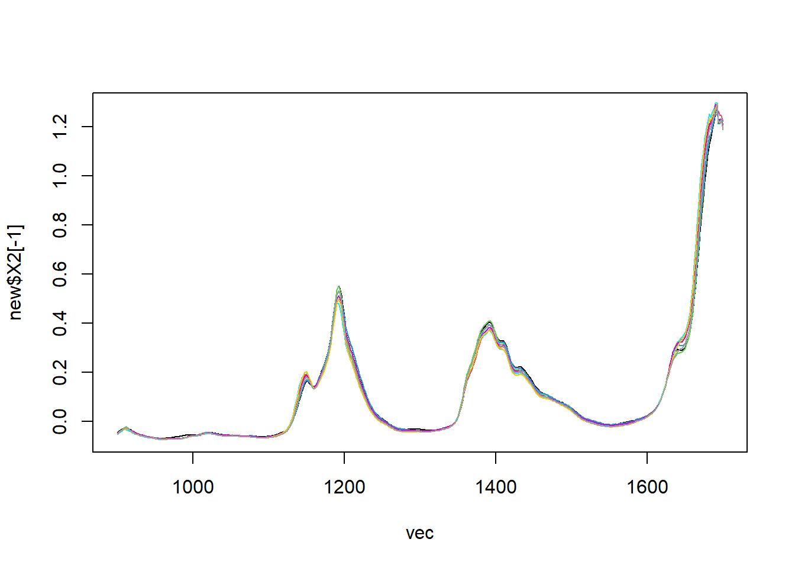
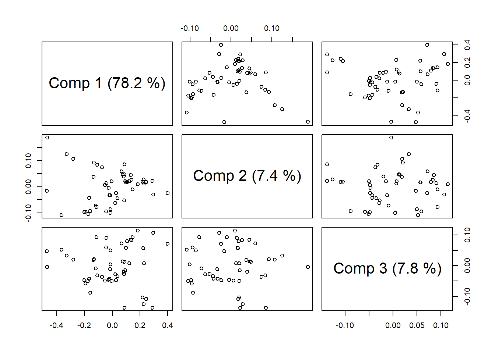
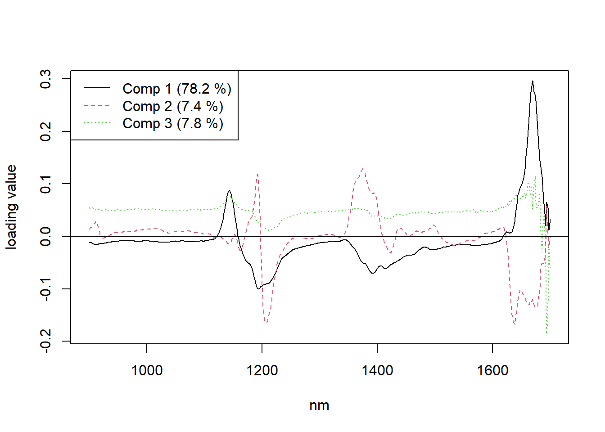

Regresión de mínimos cuadrados parciales
La regresión de mínimos cuadrados parciales (PLS) es una técnica que reduce los predictores a un conjunto más pequeño de componentes no correlacionados y realiza una regresión de mínimos cuadrados sobre estos componentes, en lugar de hacerlo sobre los datos originales.
Es útil cuando los predictores están altamente correlacionados
Se utiliza principalmente en la industria química, de medicamentos, de alimentos y de plásticos. Una aplicación común consiste en modelar la relación entre mediciones espectrales (NIR, IR, UV) que incluye muchas variables que suelen estar correlacionadas entre sí, y la composición química u otras propiedades fisioquímicas.
La diferencia principal entre PCA y PLSR es que PCA usualmente necesita más componentes que PLSR, para lograr la misma predicción del error.
En la regresión PLS, el énfasis está en el desarrollo de modelos predictivos. Por lo tanto, no suele utilizarse para descartar variables que no son útiles para explicar la respuesta.
En PLS, los componentes se seleccionan de acuerdo con la cantidad de varianza que explican en los predictores.
La regresión PLS modela las variables de respuesta de una forma multivariada, los resultados podrían diferir significativamente de los calculados para las variables de respuesta de manera individual.
Teoría
En la regresión lineal la solución de mínimos cuadrados para:
\[\Large Y=XB+\varepsilon\] esá dada por: \[\Large B=(X^TX)^{-1}X^TY\] Usualmente \(\Large X^TX\) es singular, es decir el determinante es igual a cero, ya sea porque el número de variables (columnas) en \(\Large X\) excede el número de objetos (filas), o por la colinealidad, es decir alta correlación.
Tanto PCR como PLSR eluden este inconveniente descomponiendo \(\Large X\) en puntajes ortogonales \(\Large T\) y cargas \(\Large P\)
\[\Large X=TP\]
En PCR, las puntuaciones están dadas por los vectores singulares izquierdos de X, multiplicados por los valores singulares correspondientes, y las cargas son los vectores singulares correctos de X. Sin embargo, esto solo tiene en cuenta la información sobre \(\Large X y y\), por lo tanto, puede ser subóptimo para fines de predicción.
PLSR tiene como objetivo incorporar información sobre $X $ y \(\Large Y\) en la definición de los puntajes y las cargas.
¿Qué es validación cruzada?
PLS puede calcular tantos componentes como predictores; con frecuencia se utiliza la validación cruzada para identificar el conjunto más pequeño de componentes que provee la mayor capacidad predictiva.
Si usted calcula todos los componentes posibles, el modelo resultante es equivalente al modelo que obtendría utilizando la regresión de mínimos cuadrados.
La validación cruzada calcula la capacidad predictiva de los posibles modelos para ayudar a determinar el número adecuado de componentes que se deben conservar en el modelo, uno de los criterios más usados es:
Raíz del error cuadrático medio de predicción (RMSEP) Medida de uso frecuente de las diferencias entre los valores predichos por un modelo o un estimador y los valores observados.
\[\Large RMSEP=\sqrt{\frac{\sum_{t=1}^{T}(\hat y_t-y_t)^2}{T}}\] Donde \(\Large\hat {y_t}\) Es la respuesta estimada a partir del modelo. \(\Large {y_t}\) Es la respuesta observada \(\Large T\) es el numero de observaciones
Este método es aplicado mediante “Dejar uno fuera”, calcula los posibles modelos dejando fuera una observación a la vez, esta característica se especifica en el modelo como LOO
- El objetivo es predecir o analizar un conjunto de variables dependientes a partir de un conjunto de variables independientes o predictoras. La predicción se lleva a cabo extrayendo a partir de dichas variables predictoras un conjunto de factores ortogonales llamadas variables latentes (LV), de manera que se construye un modelo de calibración para que tenga la mejor capacidad predictiva al aplicarlo al análisis de muestras diferentes de las utilizadas para la construcción del modelo PLS.
Predicción en regresión PLS
Usted puede usar la predicción en PLS con dos fines principales.
Probar la calidad de las predicciones
Aplique el modelo PLS a un conjunto de datos de prueba que incluya respuestas para cada observación, que sea independiente del conjunto utilizado para estimar el modelo PLS.
Predecir nuevas respuestas El modelo estima nuevos valores de respuesta para un conjunto de predictores para los cuales usted no tiene datos de respuesta.
Ejemplo
La librería que trabaja este tipo de modelos es pls, la cual proporciona la siguiente base de datos:
Un conjunto de datos con espectro NIR y número de octanaje de 60 muestras de gasolina, fueron medidas usando reflactancia difusa, como log(1/R), desde 900 nm hasta 1700 nm en intervalos de 2 nm, dando 401 longitudes de onda.
Es decir cada muestra contine 401 medidas
library(pls)
new=data.frame(t(gasoline))
new## X1 X2 X3 X4 X5 X6
## octane 85.300000 85.250000 88.450000 83.400000 87.900000 85.500000
## NIR.900 nm -0.050193 -0.044227 -0.046867 -0.046705 -0.050859 -0.048094
## NIR.902 nm -0.045903 -0.039602 -0.041260 -0.042240 -0.045145 -0.042739
## NIR.904 nm -0.042187 -0.035673 -0.036979 -0.038561 -0.041025 -0.038812
## NIR.906 nm -0.037177 -0.030911 -0.031458 -0.034513 -0.036357 -0.034017
## NIR.908 nm -0.033348 -0.026675 -0.026520 -0.030206 -0.032747 -0.030143
## NIR.910 nm -0.031207 -0.023871 -0.023346 -0.027680 -0.031498 -0.027690
## NIR.912 nm -0.030036 -0.022571 -0.021392 -0.026042 -0.031415 -0.026387
## NIR.914 nm -0.031298 -0.025410 -0.024993 -0.028280 -0.034611 -0.028811
## NIR.916 nm -0.034217 -0.028960 -0.029309 -0.030920 -0.037781 -0.031481
## NIR.918 nm -0.036012 -0.032740 -0.033920 -0.034012 -0.040752 -0.034124
## NIR.920 nm -0.039792 -0.036683 -0.038539 -0.037082 -0.044070 -0.037468
## NIR.922 nm -0.043037 -0.040169 -0.042571 -0.040444 -0.047320 -0.040796
## NIR.924 nm -0.047313 -0.044899 -0.047511 -0.044858 -0.051477 -0.045207
## NIR.926 nm -0.048103 -0.046266 -0.048487 -0.046544 -0.052080 -0.046457
## NIR.928 nm -0.050627 -0.048627 -0.050455 -0.048978 -0.054009 -0.048702
## X7 X8 X9 X10 X11 X12
## octane 88.900000 88.300000 88.700000 88.450000 88.750000 88.250000
## NIR.900 nm -0.049906 -0.049293 -0.049885 -0.051054 -0.052705 -0.050383
## NIR.902 nm -0.044558 -0.043788 -0.044279 -0.045678 -0.047674 -0.044934
## NIR.904 nm -0.040543 -0.039429 -0.040158 -0.041673 -0.043960 -0.041391
## NIR.906 nm -0.035716 -0.034193 -0.034954 -0.036761 -0.039335 -0.036162
## NIR.908 nm -0.031844 -0.029588 -0.031114 -0.033078 -0.035622 -0.032389
## NIR.910 nm -0.029581 -0.026455 -0.028390 -0.030466 -0.033849 -0.030479
## NIR.912 nm -0.027915 -0.025104 -0.027017 -0.029295 -0.032669 -0.028614
## NIR.914 nm -0.030292 -0.028102 -0.029609 -0.031736 -0.035076 -0.031738
## NIR.916 nm -0.033590 -0.031801 -0.032937 -0.034843 -0.037459 -0.034432
## NIR.918 nm -0.037184 -0.036157 -0.036862 -0.038419 -0.040534 -0.036488
## NIR.920 nm -0.041549 -0.040642 -0.041143 -0.042511 -0.044022 -0.041988
## NIR.922 nm -0.045517 -0.044764 -0.044943 -0.046282 -0.047456 -0.045063
## NIR.924 nm -0.049943 -0.049325 -0.049474 -0.050663 -0.051837 -0.049701
## NIR.926 nm -0.050905 -0.050595 -0.050583 -0.051950 -0.053080 -0.051125
## NIR.928 nm -0.052997 -0.052742 -0.052843 -0.053916 -0.055153 -0.053440
## X13 X14 X15 X16 X17 X18
## octane 87.300000 88.000000 88.700000 85.500000 88.650000 88.750000
## NIR.900 nm -0.047866 -0.046594 -0.042470 -0.048503 -0.052011 -0.055093
## NIR.902 nm -0.043572 -0.041111 -0.036621 -0.043850 -0.046438 -0.049515
## NIR.904 nm -0.039234 -0.036881 -0.032430 -0.040052 -0.042741 -0.045637
## NIR.906 nm -0.033831 -0.031122 -0.026807 -0.035608 -0.037767 -0.040658
## NIR.908 nm -0.029675 -0.026667 -0.021276 -0.031709 -0.033675 -0.036019
## NIR.910 nm -0.026899 -0.023717 -0.018356 -0.029417 -0.031435 -0.033858
## NIR.912 nm -0.025460 -0.021758 -0.016116 -0.027995 -0.030016 -0.032356
## NIR.914 nm -0.028133 -0.024917 -0.019680 -0.030589 -0.032774 -0.035238
## NIR.916 nm -0.031637 -0.029152 -0.024589 -0.032894 -0.035619 -0.038240
## NIR.918 nm -0.035215 -0.033473 -0.029472 -0.035546 -0.039340 -0.042084
## NIR.920 nm -0.040068 -0.038079 -0.034818 -0.038796 -0.043272 -0.046383
## NIR.922 nm -0.043997 -0.042098 -0.039119 -0.041836 -0.047040 -0.049699
## NIR.924 nm -0.048604 -0.046936 -0.043497 -0.046293 -0.051571 -0.054278
## NIR.926 nm -0.050133 -0.048117 -0.045203 -0.047529 -0.052802 -0.055649
## NIR.928 nm -0.052271 -0.050324 -0.047322 -0.049913 -0.054809 -0.057792
## X19 X20 X21 X22 X23 X24
## octane 85.400000 88.600000 87.000000 87.150000 87.050000 87.250000
## NIR.900 nm -0.055002 -0.053971 -0.056393 -0.041806 -0.056295 -0.056614
## NIR.902 nm -0.049353 -0.048498 -0.051917 -0.037138 -0.050792 -0.050934
## NIR.904 nm -0.045749 -0.044546 -0.048119 -0.033330 -0.047015 -0.047065
## NIR.906 nm -0.040881 -0.039737 -0.042835 -0.028394 -0.041668 -0.042162
## NIR.908 nm -0.036641 -0.035025 -0.038890 -0.024088 -0.037211 -0.037512
## NIR.910 nm -0.034485 -0.032028 -0.037075 -0.022220 -0.035112 -0.035385
## NIR.912 nm -0.032852 -0.030581 -0.035381 -0.020429 -0.033790 -0.033810
## NIR.914 nm -0.035723 -0.032772 -0.038580 -0.023380 -0.036529 -0.036981
## NIR.916 nm -0.038415 -0.036772 -0.041193 -0.026519 -0.039416 -0.039910
## NIR.918 nm -0.041081 -0.040725 -0.044240 -0.029953 -0.043021 -0.043189
## NIR.920 nm -0.044516 -0.045465 -0.047965 -0.034026 -0.047021 -0.047713
## NIR.922 nm -0.047784 -0.049306 -0.051153 -0.037434 -0.050319 -0.051102
## NIR.924 nm -0.052115 -0.053906 -0.055330 -0.041974 -0.054974 -0.055507
## NIR.926 nm -0.053194 -0.055096 -0.057038 -0.043457 -0.056465 -0.056889
## NIR.928 nm -0.055557 -0.057392 -0.059004 -0.045809 -0.058644 -0.059177
## X25 X26 X27 X28 X29 X30
## octane 86.850000 88.650000 86.600000 86.000000 86.100000 86.500000
## NIR.900 nm -0.056634 -0.053835 -0.054568 -0.056343 -0.055746 -0.056285
## NIR.902 nm -0.050985 -0.048211 -0.049352 -0.050790 -0.050452 -0.051229
## NIR.904 nm -0.047449 -0.043901 -0.045221 -0.046753 -0.046133 -0.047233
## NIR.906 nm -0.042544 -0.039466 -0.040954 -0.042718 -0.042041 -0.043306
## NIR.908 nm -0.037751 -0.034951 -0.036456 -0.038384 -0.037684 -0.038566
## NIR.910 nm -0.035638 -0.032682 -0.034173 -0.036067 -0.035340 -0.036586
## NIR.912 nm -0.034164 -0.031312 -0.033066 -0.034715 -0.034286 -0.035222
## NIR.914 nm -0.037250 -0.033782 -0.035521 -0.037117 -0.036270 -0.037604
## NIR.916 nm -0.040238 -0.037050 -0.038449 -0.040004 -0.039331 -0.040532
## NIR.918 nm -0.043446 -0.040557 -0.041375 -0.042628 -0.042332 -0.043434
## NIR.920 nm -0.047279 -0.044833 -0.045113 -0.046082 -0.045910 -0.046881
## NIR.922 nm -0.050546 -0.048486 -0.048388 -0.049332 -0.049047 -0.050182
## NIR.924 nm -0.055321 -0.054179 -0.053169 -0.054067 -0.054258 -0.055335
## NIR.926 nm -0.056664 -0.055183 -0.054258 -0.055440 -0.055495 -0.056295
## NIR.928 nm -0.058589 -0.057342 -0.056687 -0.057429 -0.057659 -0.058665
## X31 X32 X33 X34 X35 X36
## octane 86.300000 84.400000 84.700000 84.600000 84.500000 88.100000
## NIR.900 nm -0.055856 -0.054979 -0.056744 -0.055116 -0.055431 -0.054786
## NIR.902 nm -0.050983 -0.049543 -0.051640 -0.049883 -0.049610 -0.049772
## NIR.904 nm -0.047003 -0.045299 -0.047625 -0.045198 -0.046254 -0.045728
## NIR.906 nm -0.042624 -0.041173 -0.043418 -0.041241 -0.041308 -0.041781
## NIR.908 nm -0.038003 -0.036667 -0.038720 -0.036557 -0.037308 -0.037103
## NIR.910 nm -0.035975 -0.034132 -0.036322 -0.034154 -0.034262 -0.034873
## NIR.912 nm -0.034708 -0.033121 -0.035358 -0.033351 -0.034115 -0.032462
## NIR.914 nm -0.036853 -0.035130 -0.037381 -0.035328 -0.035523 -0.035916
## NIR.916 nm -0.039795 -0.037817 -0.040105 -0.038093 -0.038780 -0.038543
## NIR.918 nm -0.042890 -0.040240 -0.042422 -0.040302 -0.040580 -0.043005
## NIR.920 nm -0.046445 -0.043501 -0.045357 -0.043375 -0.043951 -0.046241
## NIR.922 nm -0.049663 -0.046507 -0.048468 -0.046581 -0.047134 -0.050096
## NIR.924 nm -0.054845 -0.051635 -0.053865 -0.051438 -0.051798 -0.054940
## NIR.926 nm -0.055789 -0.052831 -0.054703 -0.052836 -0.053608 -0.055792
## NIR.928 nm -0.058012 -0.055225 -0.057480 -0.055087 -0.055447 -0.058037
## X37 X38 X39 X40 X41 X42
## octane 85.250000 88.400000 88.200000 88.400000 88.550000 88.350000
## NIR.900 nm -0.052696 -0.051488 -0.050822 -0.053711 -0.052652 -0.050152
## NIR.902 nm -0.047364 -0.045710 -0.045340 -0.047820 -0.046447 -0.044052
## NIR.904 nm -0.043219 -0.041979 -0.040816 -0.043375 -0.043614 -0.040550
## NIR.906 nm -0.039882 -0.037985 -0.036766 -0.039730 -0.040247 -0.036536
## NIR.908 nm -0.035381 -0.034024 -0.031458 -0.035277 -0.035748 -0.032156
## NIR.910 nm -0.032813 -0.030727 -0.029078 -0.032090 -0.033943 -0.030090
## NIR.912 nm -0.031885 -0.029478 -0.027847 -0.031238 -0.031325 -0.028906
## NIR.914 nm -0.034334 -0.031468 -0.029164 -0.033153 -0.035319 -0.031714
## NIR.916 nm -0.037243 -0.036109 -0.034641 -0.037076 -0.037886 -0.034768
## NIR.918 nm -0.038527 -0.038571 -0.037432 -0.040173 -0.040906 -0.037636
## NIR.920 nm -0.041641 -0.043427 -0.042637 -0.044571 -0.044449 -0.041951
## NIR.922 nm -0.045106 -0.046328 -0.046195 -0.048289 -0.047880 -0.045251
## NIR.924 nm -0.049352 -0.051238 -0.051316 -0.053171 -0.052200 -0.049773
## NIR.926 nm -0.050923 -0.053215 -0.053057 -0.054698 -0.052808 -0.050762
## NIR.928 nm -0.053518 -0.054823 -0.054823 -0.056797 -0.055194 -0.052852
## X43 X44 X45 X46 X47 X48
## octane 88.200000 85.300000 88.500000 88.250000 88.000000 88.850000
## NIR.900 nm -0.045382 -0.050142 -0.055431 -0.062839 -0.060146 -0.059905
## NIR.902 nm -0.040226 -0.044155 -0.049375 -0.056232 -0.054662 -0.053893
## NIR.904 nm -0.036527 -0.040605 -0.046190 -0.053075 -0.051013 -0.049825
## NIR.906 nm -0.032673 -0.036775 -0.042031 -0.048133 -0.046707 -0.045788
## NIR.908 nm -0.028697 -0.032357 -0.037362 -0.044493 -0.042162 -0.039896
## NIR.910 nm -0.026225 -0.029566 -0.035388 -0.041588 -0.040352 -0.037613
## NIR.912 nm -0.024899 -0.028514 -0.033041 -0.040467 -0.038058 -0.035854
## NIR.914 nm -0.026252 -0.029725 -0.036786 -0.043202 -0.041425 -0.039694
## NIR.916 nm -0.031305 -0.033475 -0.039450 -0.046477 -0.044844 -0.043639
## NIR.918 nm -0.033514 -0.035601 -0.042702 -0.049311 -0.047471 -0.046829
## NIR.920 nm -0.037953 -0.039133 -0.046633 -0.053121 -0.051406 -0.051111
## NIR.922 nm -0.041074 -0.042325 -0.050236 -0.057098 -0.055822 -0.055318
## NIR.924 nm -0.046163 -0.046617 -0.054882 -0.062088 -0.060260 -0.059971
## NIR.926 nm -0.047887 -0.048656 -0.056005 -0.062803 -0.060851 -0.060598
## NIR.928 nm -0.049345 -0.050710 -0.057955 -0.065006 -0.063578 -0.062671
## X49 X50 X51 X52 X53 X54
## octane 88.450000 88.700000 88.100000 87.600000 88.350000 85.100000
## NIR.900 nm -0.060446 -0.060961 -0.052634 -0.052700 -0.053394 -0.054134
## NIR.902 nm -0.054912 -0.056118 -0.046971 -0.047331 -0.047990 -0.048487
## NIR.904 nm -0.051417 -0.052393 -0.043205 -0.043577 -0.044082 -0.045171
## NIR.906 nm -0.046888 -0.048156 -0.039538 -0.040344 -0.040690 -0.041012
## NIR.908 nm -0.042582 -0.043868 -0.034724 -0.035613 -0.036469 -0.035553
## NIR.910 nm -0.040267 -0.041965 -0.032414 -0.033652 -0.033663 -0.034104
## NIR.912 nm -0.038564 -0.040130 -0.029820 -0.031383 -0.031475 -0.031523
## NIR.914 nm -0.041482 -0.043010 -0.033670 -0.034717 -0.034740 -0.034866
## NIR.916 nm -0.045056 -0.046227 -0.036481 -0.037500 -0.037418 -0.037200
## NIR.918 nm -0.047595 -0.048838 -0.040107 -0.040242 -0.040692 -0.038979
## NIR.920 nm -0.051649 -0.052946 -0.044330 -0.043958 -0.044748 -0.042826
## NIR.922 nm -0.055624 -0.056559 -0.047534 -0.047056 -0.048034 -0.046231
## NIR.924 nm -0.060345 -0.061096 -0.052034 -0.051499 -0.052443 -0.050822
## NIR.926 nm -0.061197 -0.061928 -0.052498 -0.052209 -0.053603 -0.051837
## NIR.928 nm -0.063400 -0.064101 -0.055649 -0.054662 -0.055775 -0.054924
## X55 X56 X57 X58 X59 X60
## octane 85.100000 84.700000 87.200000 86.600000 89.600000 87.100000
## NIR.900 nm -0.049623 -0.046884 -0.055555 -0.053693 -0.056311 -0.058805
## NIR.902 nm -0.044263 -0.042360 -0.049867 -0.048020 -0.051231 -0.053311
## NIR.904 nm -0.041154 -0.038683 -0.045942 -0.044677 -0.047483 -0.049543
## NIR.906 nm -0.037335 -0.035291 -0.042266 -0.041021 -0.044605 -0.045053
## NIR.908 nm -0.032926 -0.030175 -0.037195 -0.036254 -0.039404 -0.040598
## NIR.910 nm -0.030602 -0.027898 -0.034837 -0.034531 -0.037526 -0.038965
## NIR.912 nm -0.028713 -0.026519 -0.031842 -0.032428 -0.034336 -0.036749
## NIR.914 nm -0.032058 -0.029413 -0.036051 -0.035264 -0.037852 -0.040284
## NIR.916 nm -0.034363 -0.032182 -0.038897 -0.038362 -0.041023 -0.042080
## NIR.918 nm -0.035440 -0.034033 -0.042842 -0.040816 -0.044488 -0.045058
## NIR.920 nm -0.039802 -0.037016 -0.045712 -0.044461 -0.048675 -0.049194
## NIR.922 nm -0.042433 -0.039604 -0.049276 -0.047152 -0.051964 -0.052106
## NIR.924 nm -0.046782 -0.044603 -0.054354 -0.051256 -0.056449 -0.056853
## NIR.926 nm -0.047554 -0.045830 -0.055280 -0.053010 -0.057032 -0.058258
## NIR.928 nm -0.050767 -0.048799 -0.057617 -0.055236 -0.059608 -0.060359
## [ reached 'max' / getOption("max.print") -- omitted 386 rows ]vec=seq(900,1700,by=2)
plot(vec,new$X2[-1],type='l')
lines(vec,new$X1[-1],col=2)
lines(vec,new$X3[-1],col=3)
lines(vec,new$X4[-1],col=4)
lines(vec,new$X5[-1],col=5)
lines(vec,new$X6[-1],col=6)
lines(vec,new$X7[-1],col=7)
lines(vec,new$X8[-1],col=8)
Para realizar la validación cruzada de este conjunto de datos, se divide la serie en dos subconjuntos, una parte de entrenamiento y otra parte de prueba.
gasTrain <- gasoline[1:50,]
gasTest <- gasoline[51:60,]Para ajustar el modelo de regresión de mínimos cuadrados parciales
gas1 <- plsr(octane ~ NIR, ncomp = 10, data = gasTrain, validation = "LOO")
summary(gas1)## Data: X dimension: 50 401
## Y dimension: 50 1
## Fit method: kernelpls
## Number of components considered: 10
##
## VALIDATION: RMSEP
## Cross-validated using 50 leave-one-out segments.
## (Intercept) 1 comps 2 comps 3 comps 4 comps 5 comps 6 comps
## CV 1.545 1.357 0.2966 0.2524 0.2476 0.2398 0.2319
## adjCV 1.545 1.356 0.2947 0.2521 0.2478 0.2388 0.2313
## 7 comps 8 comps 9 comps 10 comps
## CV 0.2386 0.2316 0.2449 0.2673
## adjCV 0.2377 0.2308 0.2438 0.2657
##
## TRAINING: % variance explained
## 1 comps 2 comps 3 comps 4 comps 5 comps 6 comps 7 comps
## X 78.17 85.58 93.41 96.06 96.94 97.89 98.38
## octane 29.39 96.85 97.89 98.26 98.86 98.96 99.09
## 8 comps 9 comps 10 comps
## X 98.85 99.02 99.19
## octane 99.16 99.28 99.39La validación cruzada del error se hace a través de la siguiente función, donde se relaciona el error con el número de componentes principales, donde se evidencia que es suficiente con dos componentes principales, para reducir el error
plot(RMSEP(gas1), legendpos = "topright")
Una vez el número de componentes ha sido escogido, se pueden inspeccionar diferentes aspectos, como la relación entre los valores estimados y los valores ajustados, con 2 componentes principales, para el valor del octanaje
plot(gas1, ncomp = 3, asp = 1, line = TRUE)Los puntajes de las tres primeras componentes, sirven para detectar patrones, anomalias y puntos atípios que influyen en las estimaciones.
plot(gas1, plottype = "scores", comps = 1:3)
La varianza eplicada por cada una de las componentes puede ser extraida mediante:
explvar(gas1)## Comp 1 Comp 2 Comp 3 Comp 4 Comp 5 Comp 6
## 78.1707683 7.4122245 7.8241556 2.6577773 0.8768214 0.9466384
## Comp 7 Comp 8 Comp 9 Comp 10
## 0.4921537 0.4723207 0.1688272 0.1693770La grafica de las dos primeras componente estimadas es
plot(gas1, "loadings", comps = 1:3, legendpos = "topleft",
labels = "numbers", xlab = "nm")
abline(h = 0)
El valor estimado para el vector de prueba, con su respectivo error es:
predict(gas1, ncomp = 2, newdata = gasTest)## , , 2 comps
##
## octane
## 51 87.94125
## 52 87.25242
## 53 88.15832
## 54 84.96913
## 55 85.15396
## 56 84.51415
## 57 87.56190
## 58 86.84622
## 59 89.18925
## 60 87.09116RMSEP(gas1, newdata = gasTest)## (Intercept) 1 comps 2 comps 3 comps 4 comps
## 1.5369 1.1696 0.2445 0.2341 0.3287
## 5 comps 6 comps 7 comps 8 comps 9 comps
## 0.2780 0.2703 0.3301 0.3571 0.4090
## 10 comps
## 0.6116